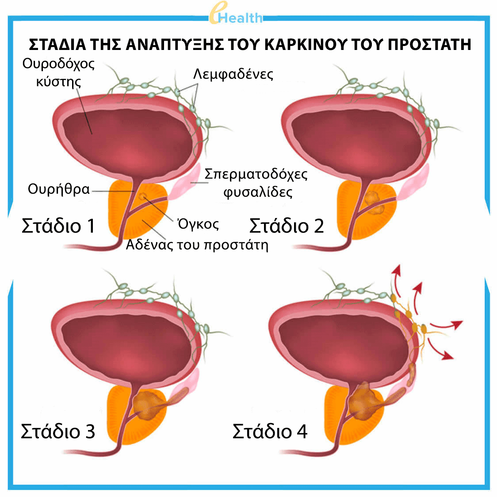
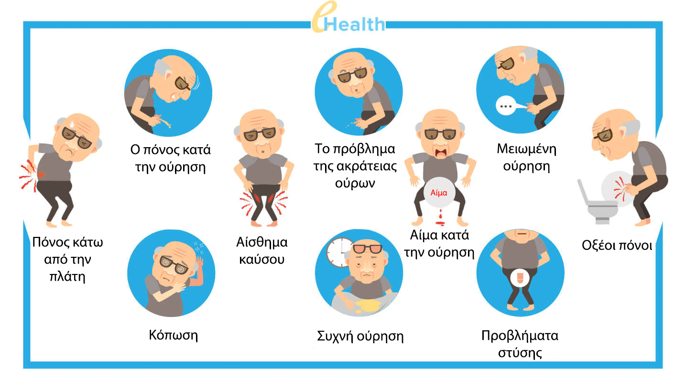
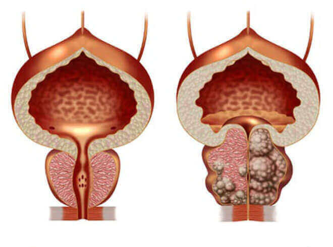
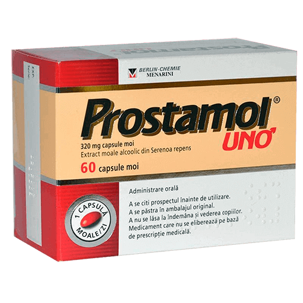

Στο Ισραήλ έμαθαν να γιατρεύουν τους άντρες από την προστατίτιδα μέσα σε 2-3
εβδομάδες, μια και για πάντα.
(η μεθοδολογία περιγράφεται παρακάτω)
Εν τω μεταξύ, στην Ελλάδα: οι άπληστοι γιατροί και φαρμακοποιοί κρύβουν αποτελεσματικά και μαζί με αυτό φθηνά σκευάσματα σε ετήσια βάση, γράφοντας στις συνταγές αντί γι’ αυτά πολύ ακριβά ανάλογα φάρμακα και ορίζοντας ταπεινωτικές διαδικασίες! (σχετικά αν ενδιαφέρεστε να μάθετε για την Ισραηλινή μεθοδολογία -- διαβάστε προσεκτικά στο παρακάτω άρθρο)
Η προστατίτιδα είναι η πιο κοινή ασθένεια μεταξύ των ανδρών ηλικίας άνω των 40 ετών, ενώ τα τελευταία χρονιά οι ειδικοί αρχίσαν να παρατηρούν μια άσχημη τάση προς την "αναζωογόνηση" αυτής της ασθένειας. Στους γιατρούς στρέφονται όλο και περισσότερο οι άνδρες με συμπτώματα της προστατιτιδας στην ηλικία των 20 και 30 χρόνων.

Οι αιτίες της ασθένειας είναι τα ακόλουθα
- - καθιστικός τρόπος ζωής
- - ακανόνιστη σεξουαλική ζωή
- - σεξουαλικά μεταδιδόμενα μολυσματικά νοσήματα
- - κληρονομική προδιάθεση
- - στρες και ασθένειες του ουροποιητικού συστήματος
Στον σύγχρονο κόσμο για να έχεις προβλήματα στον προστάτη είναι πολύ απλό. ΣΕ κάποιον εκδηλώνονται σε ηλικία 25 ετών, σε κάποιον ηλικίας 45 ετών - και αυτό είναι θέμα χρόνου.
Ελέγξτε εάν έχετε συμπτώματα προστατίτιδας:

Το 2019 Υπουργείο Υγείας έφερε δημοσίευσε την τρομακτική στατιστική : πάνω από το 55% των ανδρών ηλικίας άνω των 40 ετών αντιμετωπίζουν προβλήματα που σχετίζονται με τον αδένα προστάτη. Να καθοριστεί την παρουσία της προστατίτιδας στον άνδρα είναι αρκετά απλή διαδικασία και χωρίς ιατρική εκπαίδευση, γιατί τα περισσότερα από τα συμπτώματα του είναι συγκεκριμένα μόνο γι’ αυτήν την πάθηση:
-
Τραβηγμένος πόνος:
- -στο κάτω μέρος της κοιλιάς, στο όσχεο,
- -στο πέος ή στην περιοχή του,
-
Διαταραχές στην λειτουργία του ουροποιητικού συστήματος:
- - συχνή ούρηση, αίσθημα καύσου στην ουρήθρα,
- - συνεχής αίσθημα «της πληρότητας του ουροδόχου κύστης»,
- - δυσκολία στην ούρηση (ασθενής ροή),
-
Διαταραχές της σεξουαλικής λειτουργίας:
- - έλλειψη της σεξουαλικής επιθυμίας,
- - επιδείνωση της διάρκειας και της ποιότητας της στύσης,
-
Διαταραχές εκσπερμάτωσης :
- - πρόωρη εκσπερμάτωση ή αντίθετο- προβλήματα με την επίτευξη της:
- - μικρή ποσότητα σπερματικού υγρού
-
Και επίσης –η αυξημένη κόπωση και η ευερεθιστότητα.
Ακόμη, παρά τις εμφανές ταλαιπωρίες, πολλοί άνδρες εδώ και χρόνια ζουν με προστατίτιδα, αγνοώντας τις μη αναστρέψιμες συνέπειες, μερικά από τα οποία - είναι ασυμβίβαστα με τη ζωή.

Η προστατίτιδα που δεν έχει υποστεί σε θεραπείες, οδηγεί πάντοτε στο αδένωμα του
προστάτη ("Ανδρικός θάνατος")
Εν μέρει, μπορεί να γίνει κατανοητό, ότι με μια τέτοια διάγνωση σε κάθε άνδρα, συχνά γίνεται μια σοβαρή κατάθλιψη. Επιπλέον, μετά τη διάγνωση της προστατίτιδας, οι επισκέψεις στον ουρολόγο πρέπει να γίνονται καταναγκαστικές και τακτικές και οι γιατροί μόνο θα ανακουφίζουν από τα πιο οξέα συμπτώματα με τη βοήθεια των φαρμάκων «από τους συνιστάμενους φαρμακοποιούς». Αποδεικνύεται, ότι ο άνδρας δεν θεραπεύει την ασθένεια! Εάν αυτός θα σταματήσει να παίρνει τα συνταγογραφούμενα φάρμακα, τα συμπτώματα θα ξαναεμφανίζονται και πάλι.
Πώς θεραπεύεται η προστατίτιδα σε εμάς στην χώρα μας (ή πώς ΔΕΝ ΘΑ ΠΡΕΠΕΙ να θεραπευτεί)
Το πιο λυπηρό είναι, ότι δεν μπορείτε να απαλλαγείτε από προστατίτιδα, ακόμα κι αν βάζετε πάρα πολλές προσπάθειες. θέλετε πάρα πολύ.
Τυποποιημένες προσεγγίσεις για τη θεραπεία:
- Εσείς απευθύνεστε στην κρατική ή ιδιωτική κλινική: στην ουσία δεν έχει σημασία, γιατί στο τέλος θα πρέπει να πληρώσετε έτσι και αλλιώς.
- Ο γιατρός σας κάνει μια εξέταση, μετά σας στέλνει να κάνετε ακόμα ένα σωρό εξετάσεις. Κάποιες από αυτές δεν χρειάζονται καν και να κάνετε, αλλά κάντε για κάθε περίπτωση -αν ξαφνικά να βρεθεί και κάτι άλλο, που μπορεί να θεραπευτεί. Και, φυσικά, οι ίδιες οι εξετάσεις πολλές φορές δεν είναι δωρεάν.
- Μόλις τα αποτελέσματα εξετάσεων φτάσουν στον γιατρό, αυτός θέτει τη διάγνωση "προστατίτιδα" και συνταγογραφεί "τα προτεινόμενα φάρμακα". Τα φάρμακα χορηγούνται εκείνα, που προορίζονται για την ανακούφιση από τα συμπτώματα της ασθένειας, αλλά όχι για τη θεραπεία. Πίσω από αυτά, σας παρέχονται "τα ψεύτικα" από φαρμακολογικές εταιρίες, οι εκπρόσωποί των οποίων συνεργάζονται ήδη για μεγάλο χρονικό διάστημα με τη διοίκηση της κλινικής, μοιράζοντας το εισόδημα από το εικονικό φάρμακο που αγοράσατε. Δεν θα αναφέρουμε τα ονόματα των σκευασμάτων, αυτά είναι στα χείλη όλων.
- Εδώ φτάνουμε στην πιο ενδιαφέρουσα στιγμή. Έχοντας συνταγογραφήσει όλα τα "φάρμακα", ο
καλός γιατρός συνταγογραφεί
ένα πρωκτικό μασάζ του προστάτη. Είναι μια ταπεινωτική και πολύ δυσάρεστη διαδικασία – μασάζ γίνεται
με
το δάχτυλό μέσω πρωκτού του άνδρα. Κατά μέσο όρο, χρειάζονται 10-14 επισκέψεις του μασάζ, και για κάθε
επίσκεψη, φυσικά, πρέπει να πληρώσει.

- Και αυτό είναι μόνο μία πλευρά του νομίσματος. Εκτός από την κύρια θεραπεία, οι γιατροί συχνά συνταγογραφούν φάρμακα για την βελτίωση της σεξουαλικής λειτουργίας και αύξηση της ποιότητας του σπέρματος, καθώς και κάτι για την εξάλειψη των αρνητικών επιπτώσεων από τα φάρμακα που αναφέρθηκαν προηγουμένως.
Να κάνουμε συμπέρασμα. Μια θεραπεία της προστατίτιδας στην Ελλάδα θα κοστίσει από 300 έως 1.500 ευρώ το χρόνο. Μια τέτοια διακύμανση του κόστους οφείλεται στο γεγονός, ότι ο γιατρός ουρολόγος σχηματίζει μια αγωγή θεραπείας, καταρχάς, με βάση τις οικονομικές δυνατότητες του ασθενούς. Στην περίπτωση αυτή, το αποτέλεσμα από μια τέτοια αγωγή είναι αυτή: τα συμπτώματα της ασθένειας φεύγουν, ο ασθενής αρχίζει να αισθάνεται καλά. Αλλά η χρόνια προστατίτιδα θα παραμείνει και θα εκδηλωθεί ξανά, μόλις ο άνδρας θα παύσει να συμμορφώνεται με τις συνταγές που έχουν συνταγογραφηθεί σ’ αυτόν από το γιατρό. Κατά συνέπεια, ένας άνδρας από έτος σε έτος αναγκάζεται να καταβάλλει χιλιάδες ευρώ, να εισέλθει σε έναν φαύλο κύκλο, μέσα στον οποίο χτίζεται η κοινή φαρμακευτική επιχείρηση.
Πώς θεραπεύεται η προστατίτιδα στο Ισραήλ
Στο Ισραήλ, για να θεραπεύσουν προστατίτιδα, δεν χρειάζεται καν να απευθύνεστε στον γιατρό. Αρκεί να έρθετε στο φαρμακείο με τα πρώτα συμπτώματα της και να αγοράσετε ένα από τα αποτελεσματικά και αποδεδειγμένα μέσα σε δεκαετίες σκευάσματα. Αυτά δεν φτάνουν στην αγορά της χώρας μας μόνο και μόνο επειδή βοηθάνε εντελώς στη θεραπεία της χρόνιας προστατίτιδας μια φορά και για πάντα! Φυσικά, ένα τέτοιο σκεύασμα είναι η απειλή για τις άπληστες φαρμακευτικές εταιρίες, γιατί είναι πολύ πιο συμφέρον να υπάρχει ένα άτομο για την ετήσια αφαίρεση των συμπτωμάτων της πάθησης του, αγοράζοντας κάθε φορά ακριβά ψεύτικα σκευάσματα, παρά να θεραπευθεί εντελώς η ασθένεια με ένα εντελώς φθηνό αλλά αποτελεσματικό φάρμακο. Σε αντίθεση με τη χώρα μας, στο Ισραήλ η ιδιωτική ιατρική ασφάλιση είναι ιδιαίτερα αναπτυγμένη. Στις ασφαλιστικές εταιρείες συμφέρει, ότι κάθε δεύτερος άνδρας να επισκέπτεται τους γιατρούς όχι συχνότερα από δυο φορές το χρόνο, άλλωστε, οι εταιρείες πρέπει να πληρώσουν για επισκέψεις στους γιατρούς, και οι μισθοί των γιατρών εκεί είναι πολύ μεγάλοι. Αντιθέτως, στις εταιρίες συμφέρει να είναι η θεραπεία όσο το δυνατόν πιο αποτελεσματική και ταχύτερη και δεν θέλει μεγάλα οικονομικά και έκτακτα έξοδα.
Στο Ισραήλ, οι ασφαλιστικές εταιρείες κυριαρχούν πάνω από τις φαρμακευτικές, και εμείς έχουμε το αντίθετο. Συνεπώς, μπορούν πάντα να αγοράσουν ένα πραγματικά αποτελεσματικό φάρμακο για προστατίτιδα ...
Θα αλλάξει η κατάσταση στη Ελλάδα;
Δυστυχώς, δεν υπάρχουν επί του παρόντος θετικές αλλαγές στον τομέα αυτό, δεδομένου ότι η φαρμακευτική αγορά πολλών δισεκατομμυρίων με κάθε τρόπο εμποδίζει την εμφάνιση αποτελεσματικών φαρμάκων σε κυκλοφορία στην αγορά.
Ωστόσο, τα φαρμακεία δεν ήταν από καιρό το μοναδικό μέρος, όπου μπορείτε να αγοράσετε φάρμακα. Πολλοί παραγγέλλουν τώρα φάρμακα μέσω των ιστοσελίδων των επίσημων προμηθευτών. Πάρτε ως παράδειγμα το φάρμακο , ένα από τα πιο αποτελεσματικά στο Ισραήλ, και ένα από τα λίγα, το οποίο είναι διαθέσιμο στη χώρα μας. Σχεδόν αμέσως μετά την είσοδό του στην αγορά, άρχισε να έχει την μεγάλη δημοτικότητα.
Ας συγκρίνουμε τη διαφορά ανάμεσα στο και το πιο δημοφιλές σκεύασμα στα ελληνικά φαρμακεία - Prostamol Uno

|

Prostamol Uno |
|
|---|---|---|
| Τιμή: | Υπάρχει μια προσφορά με την οποία μπορείτε να αγοράσετε ένα με έκπτωση 50%! | Περίπου 52 ευρώ για 90 κάψουλες. Μέση θεραπευτική αγωγή: 3 πακέτα = 156 ευρώ |
| Βασική δράση: | Μία φορά και για πάντα εξαλείφει πλήρως την προστατίτιδα, ακόμη και χρόνια. Μια λήψη αγωγής είναι αρκετή. | Ανακουφίζει από τα συμπτώματα της ασθένειας - καλύπτει τον πόνο και ομαλοποιεί τις διαταραχές ούρησης. |
| Περισσότερες ενέργειες: | º Η αύξηση της λίμπιντο
º Πρόληψη πρόωρης εκσπερμάτωσης º Η αύξηση της αντοχής º Η κανονικοποιήση της ούρησης º Η επαναφορά της παροχής αίματος |
Μαλάκωμα κόπρανών, η βελτίωση της εντερικής κινητικότητας |
| Παρενέργειες | Δεν υπάρχουν, αφού όλα τα συστατικά είναι απολύτως φυσικά | º Με συχνή χρήση μπορεί να προκαλέσει την εμφάνιση κακοήθων όγκων στον
αδένα του προστάτη
º Μειώνει την σεξουαλική ικανότητα º Προκαλεί πεπτικά προβλήματα º Καταστέλλει το ανοσοποιητικό σύστημα, προάγει την ανάπτυξη αλλεργιών º Μπορεί να είναι η αιτία των πόνων στο στομάχι |
| Αρχή λειτουργίας: | Έχει την επίδραση σε ολόκληρο τον προστάτη, χάρη σε μια επιλεγμένη σύνθεση από 6 φυσικά συστατικά. Έχει αντιφλεγμονώδη και ενισχυτική δράση. Αφαιρεί όλη την παθογόνο χλωρίδα από τον αδένα του προστάτη και αποκαθιστά τη δομή και τις λειτουργίες του. | Ανακουφίζει προσωρινά τον πόνο, καλύπτοντας την ασθένεια. Η κατάσταση του ασθενούς επιδεινώνεται, όταν σταματήσει την λήψη. |
| Σύνθεση: | Φυσικά φυτικά συστατικά και βιταμίνες | Το μόνο φυσικό συστατικό- είναι τα θρυμματισμένα φρούτα από νάνους φοίνικες (δεν είναι καν ένα εκχύλισμα). Όλα τα υπόλοιπα είναι χημεία: διοξείδιο του τιτανίου, χρωστικά (E124), οξείδιο του σιδήρου κλπ. |
| Εγγύηση: | 365 ημέρες - εγγύηση του κατασκευαστή | Καμία εγγύηση |
Παρόλα αυτά, παρά την κατάσταση με τα φαρμακεία, στη χώρα μας είναι δυνατό να πάρουμε την κατάλληλη θεραπεία! Και να την κάνουμε πιο προσιτή, ξεκινήσαμε το ομοσπονδιακό πρόγραμμα «Ανδρική Υγεία». Έτσι, όποιος χρειάζεται, τώρα έχει την ευκαιρία να θεραπεύσει προστατίτιδα, μην φτάνοντας στο στάδιο του καρκίνου, και αυτό είναι ανεξάρτητα από τις οικονομικές του δυνατότητες. Στα πλαίσια του προγράμματος, μπορείτε να πάρετε το με 50% έκπτωση
Μπορείτε να αγοράσετε το στην επίσημη ιστοσελίδα του κατασκευαστή, κάνοντας κλικ στο παρακάτω κουμπί.
Να έχετε υπόψη σας, ότι οι μεγάλες φαρμακευτικές δομές έχουν ήδη ξεκινήσει μια μεγάλη εκστρατεία ενάντια σε αυτό το σκεύασμα. Είναι πιθανό, ότι κάποια στιγμή θα είναι αδύνατο να αγοραστεί το στην Ελλάδα. Κάτι παρόμοιο έχει συνέβη επανειλημμένα με άλλα ανάλογα σκευάσματα. Επομένως, σας συνιστούμε να μην αναβάλλετε την αγορά. Η έκπτωση για το σκεύασμα θα έχει μέχρι (συμπεριλαμβανόμενα)
Σχόλια
Νικόλαος

Καθαρή αλήθεια είναι! Το - είναι ένα σκεύασμα-θαύμα. Το αγόρασα στο Μαυροβούνιο με σχεδόν 200 ευρώ, όταν πήγα για διακοπές το περασμένο καλοκαίρι. Πριν από αυτό, είχα υποφέρει από χρόνια προστατίτιδα μέσα σε 10 χρόνια σίγουρα. Δοκίμασα να κάνω θεραπείες όπως μου σύστηνε ο γιατρός, αλλά η θεραπεία έδινε μόνο ένα προσωρινό αποτέλεσμα. Χρησιμοποιώντας το , η προστατίτιδα έχει εξαφανιστεί τελείως. Αγόρια, το συστήνω σε όλους! Θα σας βοηθήσει!
Γρηγόρης
Παρήγγειλα, πραγματικά μου έκαναν την έκπτωση 50%.))) Ήταν μια ευχάριστη έκπληξη, ευχαριστώ!
Σέργιος
Είχα εμπειρία στην θεραπεία με αυτό το σκεύασμα. Το είχα αγοράσει στην αναφερόμενη ιστοσελίδα, μόνο τότε δεν υπήρχε καμία έκπτωση και κόστιζε αυτό περίπου 50 ευρώ ανά πακέτο. Αλλά δεν είναι κρίμα, το κυριότερο είναι ότι βοήθησε και είναι φθηνό για ένα τέτοιο αποτέλεσμα. Η προστατίτιδα έφυγε σε περίπου 2 εβδομάδες, χωρίς κανένα μασάζ.
Πέτρος
Παρακολούθησα μια φορά τη μετάδοση μιας εκπομπής στο TV, είπαν ότι δεν γίνεται να το αγοράσουμε από τα φαρμακεία. Ήταν κάτι σαν μια δημοσιογραφική έρευνα. Θέλω να μάθω γι’ αυτό περισσότερα
Σημείων
Είχα χρόνια προστατίτιδα από την ηλικία των 28 ετών. Τώρα είμαι 41 ετών και κατά τη διάρκεια αυτού του περιόδου είχα μερικές προσπάθειες για να θεραπευτώ, αλλά όλα ήταν μάταια. Την τελευταία φορά οι γιατροί με έσωσαν με το ζόρι. Είπαν, λίγο ακόμη και θα είχα τον καρκίνο. Για αυτό το λόγο, συμβουλεύω σε όλους όσοι έχουν προστατίτιδα να την ξεφορτωθούν το συντομότερο δυνατό. Αυτό είναι μια πολύ επικίνδυνη αρρώστια.
Αλεξάνδρα
Πρέπει να παραγγείλω οπωσδήποτε ένα τέτοιο στον σύζυγό μου! Σας ευχαριστώ για την πληροφορία.
Γεώργιος
Το δέμα έλαβα με έκπτωση, όπως και με υποσχέθηκαν. Ευχαριστώ στον παραγωγό!
Θεόδωρος
– είναι το καλύτερο προϊόν από όλους! Συμφωνώ με τον συντάκτη του άρθρου και με όλους τους σχολιαστές, γιατί και εγώ έκανα την θεραπεία περίπου πριν από 3 μήνες. Η προστατίτιδα πέρασε εντελώς! Βασανιστικά πολλά χρόνια, και τώρα όλα είναι φυσιολογικά.
Ιωάννης
+100500. Ένα εξαιρετικό προϊόν
Μάρκος
Διάβασα περισσότερα για το σκεύασμα στην ιστοσελίδα. Εντυπωσιακό είναι! Παρέλαβα μέσα σε 5 ημέρες από το ταχυδρομείο, αλήθεια είναι βολικά.
Παύλος
Παιδιά, το σκεύασμα είναι πραγματικά καλό. Δεν πίστευα σε αυτό από την αρχή. Αλλά για ένα μήνα χρήσης, από προστατίτιδα δεν έμεινε ούτε ίχνος: έχουν περάσει πόνοι, προβλήματα με την ούρηση. Με λίγα λόγια, η αλήθεια είναι είμαι ευχαριστημένος. Συνιστώ.

Άζα Καουφμάν, Επικεφαλής του Ινστιτούτου Βιοϊατρικής του Paul Erich στο Ισραήλ, Καθηγητής του Τμήματος Ουρολογίας
Η μέθοδος της μη επεμβατικής θεραπείας της προστατίτιδας με την χρήση των φυσικών συμπληρωμάτων, ανακαλύφθηκε για πρώτη φορά από τον ισραηλινό ουρολόγο- Άζα Καουφμάν, στα πλαίσια μελετών του Ισραηλινού Ινστιτούτου Paul Ehrlich, βιοϊατρικών επιστήμων.
Η Άζα Καουφμάν απέδειξε, ότι το σκεύασμα μπορεί να καταπολεμήσει την προστατίτιδα στο 98% των περιπτώσεων, χάρη στην σύνθεση από φυσικά συστατικά, μεταξύ των οποίων και το εκχύλισμα Serenoa.
Τα τελευταία χρόνια, τα σκευάσματα με βάση το Serenoa, τέτοια όπως , όλο και περισσότερο διορίζονται από τους ισραηλινούς γιατρούς, και τους συναδέλφους τους σε άλλες χώρες.
Το μοναδικό προϊόν, η αποτελεσματικότητα και η ασφάλεια του οποίου αναγνωρίζονται από την επιστημονική κοινότητα, πωλείται στην Ελλάδα με το εμπορικό σήμα .
Απόστολος
Ευχαριστώ για το ενδιαφέρον άρθρο! Στην Ελλάδα τα πάντα είναι διεφθαρμένα στο υψηλότερο επίπεδο. Καλό είναι, ότι στο Διαδίκτυο μπορούμε να πάρουμε πληροφορίες, που κρύβει η κυβέρνηση τόσο καλά από εμάς. Παρήγγειλα με την έκπτωση, θα κάνω την θεραπεία.